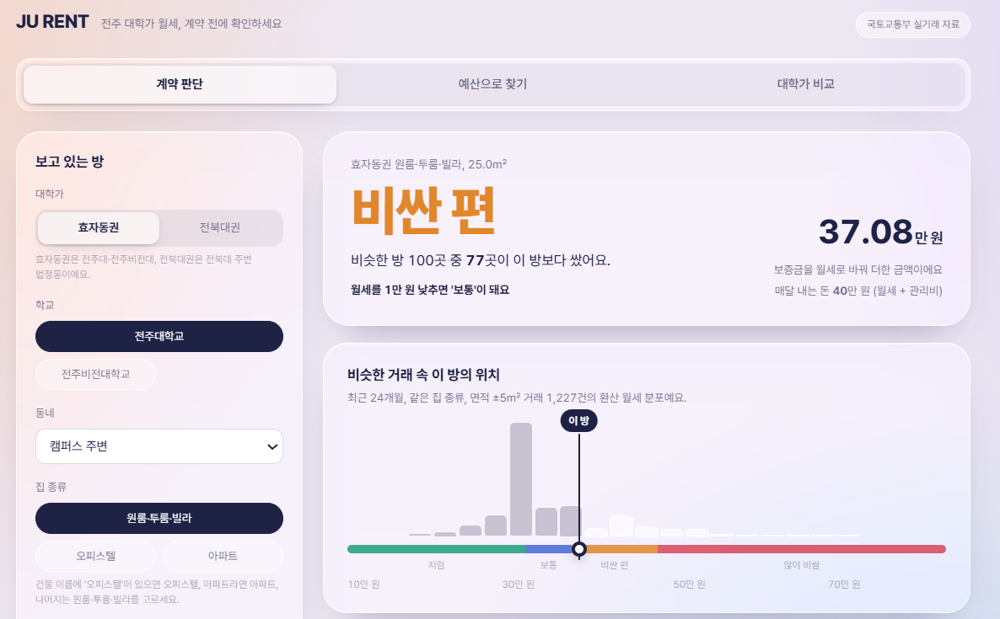
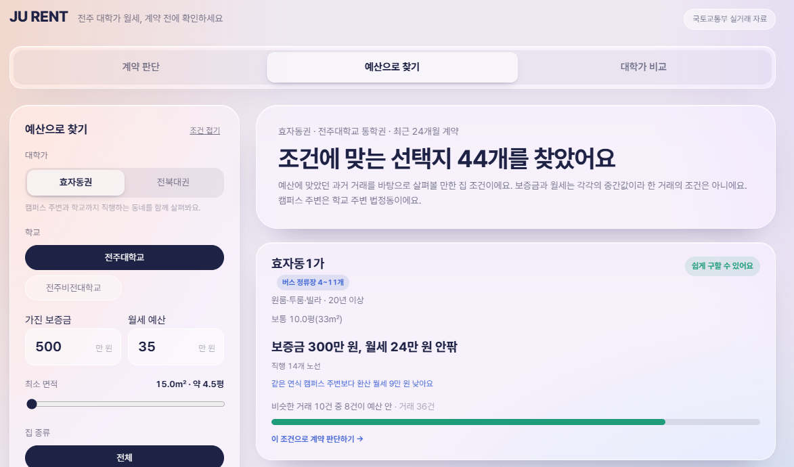
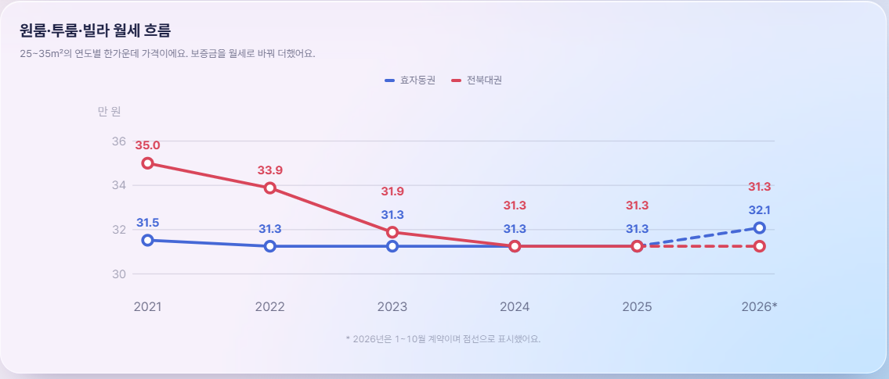

전주대학교 리빙랩 · 2026년 2학기
JU RENT
“이 방, 300에 30이면 괜찮은 걸까?” 전주 대학가 자취생이 보고 있는 방의 가격이 적당한지, 같은 예산이면 어느 동네가 나은지 국토교통부 실거래 데이터로 판단해 주는 서비스입니다.
01 / TOPIC
주제를 정하기까지
처음에는 기상·도로·침수 이력 데이터로 침수 위험 도로를 미리 찾아 지자체의 점검 우선순위를 돕는 AI 에이전트(RainRoad Agent)를 기획했습니다. 기획 발표에서 최근 전주시 침수 피해 데이터가 없다는 지적을 받았고, 실제로 확보할 수 있는 데이터를 먼저 확인한 뒤 주제를 다시 고르기로 했습니다.
공공데이터포털과 무료 API를 탐색한 끝에, 신고 의무가 있어 거래 기록이 꾸준히 쌓이는 국토교통부 전월세 실거래 데이터를 바탕으로 전주 대학가 자취방 문제를 다루기로 정했습니다. 2026년 11월 2일 최종 기획을 발표했습니다.
02 / BACKGROUND
문제 배경
국토교통부 실거래 자료를 집계해 보니 대학가에서 월세는 이미 표준이 되었습니다. 전월세 거래 중 월세 비중은 2021년에서 2025년 사이 효자동권(전주대·전주비전대)이 52.5%에서 76.1%로, 전북대권이 58.7%에서 86.1%로 늘었습니다.
반면 대학가 25~35㎡ 원룸의 보통 계약은 6년째 보증금 300만 원 / 월세 30만 원 근처에 머물러 있었습니다. 그래서 “월세가 오른다”는 주장 대신, 지금 보고 있는 매물이 이 기준 가격에서 얼마나 벗어났는지 학생이 확인할 방법이 없다는 점을 문제로 정의했습니다. 기존 부동산 앱은 실거래 목록을 보여 주지만 보증금을 비용에 넣지 않고, 매물이 실거래 중 어느 수준인지도 알려 주지 않습니다.
03 / WHAT WE BUILT
구현한 기능
- 계약 판단. 대학가·학교·동네·집 종류·면적·보증금·월세를 넣으면 같은 조건의 최근 24개월 실거래 사이에서 이 방의 위치를 보여 줍니다. “월세를 1만 원 낮추면 ‘보통’이 돼요” 같은 협상 힌트도 함께 제시합니다.
- 예산으로 찾기. 가진 보증금과 월세 예산을 넣으면 실제로 그 돈에 계약된 거래가 많은 동네와 집 종류를 찾아 줍니다. 학교까지 직행 버스가 있는 통학권 동네도 함께 보여 줍니다.
- 대학가 비교. 효자동권과 전북대권을 집 종류·면적별로 나란히 놓고 연도별 월세 흐름을 비교합니다.
- 데이터 갱신. 국토교통부 API로 새 실거래를 받아오고, 기존 자료와 대조해 기준을 통과할 때만 서비스 데이터를 교체합니다.



04 / METHOD
판단 방식: 계산은 코드, 설명은 AI
- 환산 월세. 보증금이 다른 매물끼리 비교할 수 있도록 월세에 보증금의 기회비용(보증금 × 연 이율 ÷ 12)을 더합니다. 기본 이율은 주택임대차보호법의 전환율 상한(기준금리 + 2%p)을 사용합니다.
- 비교 대상. 같은 대학가, 같은 집 종류, 면적 ±5㎡, 최근 24개월의 신규 계약만 비교합니다. 30건이 안 되면 면적 범위를 ±10㎡로 넓히고, 그래도 부족하면 기간을 늘립니다.
- 판정 순서. 표본이 부족하거나 한 건물 거래가 절반 이상이면 판정을 보류하고, 그 밖에는 분포 속 위치에 따라 저렴(하위 25%) · 보통(25~75%) · 비싼 편(75~90%) · 많이 비쌈(상위 10%)으로 판정합니다.
- AI의 역할 제한. 모든 숫자는 계산 모듈에서 나오고, AI는 계산 결과만 받아 이유를 한국어로 설명합니다. 결과에 없는 숫자가 설명에 나오면 그 설명은 버립니다.
- 학생이 쓰는 말. 다가구·다세대 같은 법적 구분 대신 “원룸·투룸·빌라 / 오피스텔 / 아파트”로 묶어 보여 줍니다.
05 / DATA
데이터와 한계
- 국토교통부 전월세 실거래(2021년 1월부터, 원자료 CSV와 공공데이터 API)
- 국토교통부 TAGO 버스 노선·정류소 정보 — 학교까지 직행 노선과 정류장 수
- 브이월드 법정동 경계 — 동 단위 집계
다가구 주택은 지번이 공개되지 않아 법정동 단위로 분석하고, 실거래에는 관리비·채광·소음 같은 정보가 없습니다. 신고가 늦게 들어오는 최근 두 달은 비교에서 빼고, 결과마다 기간과 표본 수를 함께 보여 줍니다. 부동산 플랫폼은 공개 API가 없어 크롤링 없이 설계했습니다.
06 / VALIDATION PLAN
실증 계획
새 학기 방 구하기가 몰리는 12~2월에 맞춰 세 단계로 확인할 계획입니다. 앞 단계를 통과해야 다음 단계로 넘어갑니다.
- 데이터 검증. 기준을 만든 뒤 새로 신고된 실거래를 매물처럼 넣어, 약 절반이 ‘보통’으로 나오는지 확인합니다. AI 설명 100건도 직접 읽고 점검합니다.
- 사용자 테스트. 두 대학가 학생 12명에게 과업 3개를 맡기고, 같은 매물에 대한 판단 확신도를 사용 전후로 비교합니다.
- 실사용 운영. 배포 후 2~3주 동안 익명 사용 기록과 설문으로 실제 비교·협상·동네 탐색 행동이 달라졌는지 봅니다.
| 지표 | 목표 |
|---|---|
| 새 실거래 중 ‘보통’ 판정 비율 | 40~60% |
| 주요 조건에서 판정이 나오는 비율 | 80% 이상 |
| 과업 성공률 | 80% 이상 |
| 사용성 점수(SUS) | 68점 이상 |
| 사용 전후 판단 확신도 | +1점 이상 |
| “방 구할 때 다시 쓰겠다” | 70% 이상 |
아직 실증 전이며, 위 수치는 결과가 아니라 미리 정한 목표입니다.
07 / CONTRIBUTION
본인 기여
- 데이터 탐색과 주제 전환. 데이터 부족으로 첫 주제가 막힌 뒤, 활용 가능한 공공데이터를 다시 탐색하고 실거래 집계로 주제의 근거를 검증했습니다.
- 명세 기반 개발 흐름 설계. 기획과 명세서 작성, 개발과 테스트, 고위험 변경 교차 검증을 서로 다른 AI 도구에 나눠 맡기고, 하나의 GitHub 저장소에서 결과를 합치는 방식으로 진행했습니다.
- 결정과 수치 기록. 판단 규칙을 바꿀 때마다 무엇을 왜 바꿨는지 결정 기록(54건)에 남기고, 발표에 쓰는 수치는 코드로 산출해 검증 대장에 따로 관리했습니다.
- 개인 과제. 서비스 SWOT 분석과 JU RENT 실증 방안을 작성해 발표했습니다.
08 / REFLECTION
배운 점
첫 주제가 데이터 부족으로 막히면서, 아이디어보다 확보 가능한 데이터를 먼저 확인해야 한다는 점을 배웠습니다. 실거래를 직접 집계해 보니 “대학가 월세가 오르고 있다”는 처음 가정과 달리 기준 가격은 몇 년째 거의 그대로였고, 이 결과를 받아들여 서비스의 메시지를 ‘가격 부담’에서 ‘기준 대비 판단’으로 바꿨습니다.
AI를 서비스에 넣을 때도 숫자는 코드가 만들고 AI는 설명만 하도록 역할을 나눴습니다. 사용자가 판단 근거를 확인할 수 있어야 AI 결과를 믿을 수 있다는 점이 이 프로젝트에서 가장 크게 남은 설계 원칙입니다.
09 / NEXT STEP
다음 단계
실증 1단계(데이터 검증)를 진행하고, 판정이 자주 나오지 않는 조건을 바탕으로 전주교대·기전대 등 다음 대학가로 범위를 넓힐 순서를 정합니다. 배포와 사용자 의견 수집은 마지막 단계에서 진행합니다.